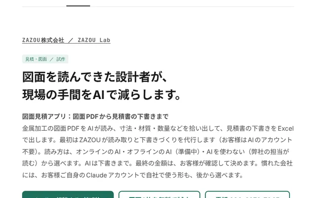
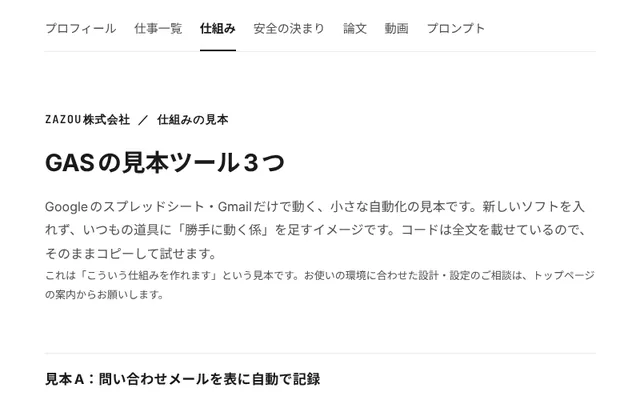
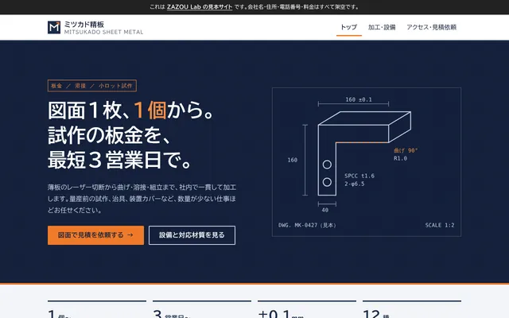
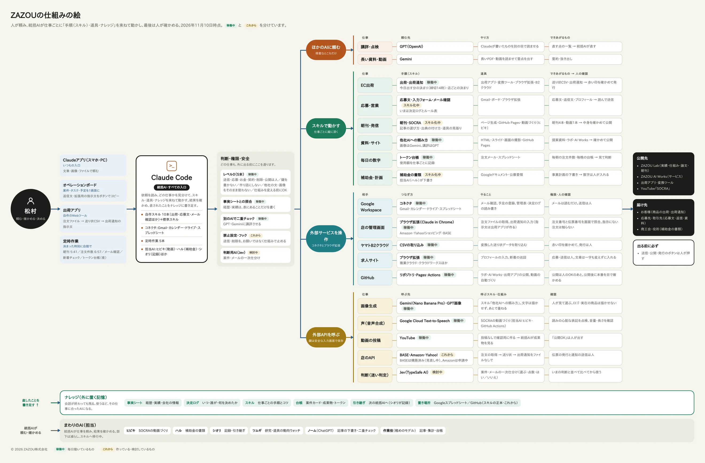

図面
図面
見積
業務改善
Web

ポートフォリオ｜ZAZOU Lab
AIで、仕事の流れをつくる。
業務改善エンジニア（DXエンジニア） 松村貴士
ラボは、ZAZOUの実績と、試作・研究の途中経過を公開している場所です。論文には中間発表の段階のものも含みます。
垂直型AIエージェント ── 仕事の中身を、深く理解するAI。 ZAZOU AI Works
1つの何でも屋のAIではなく、仕事ごとに「手順（スキル）・道具・ナレッジ」を縦に積み、統括AIが束ねて動かしています。直したことはその仕事のナレッジに書き足すので、使うほど仕事に合っていきます。AIが推測で書かないよう事実をまとめた表と照らし合わせ、別のAIによる二重チェックと人の最終確認を通してから外に出しています。
Skillsできること
仕事一覧と同じ分け方で並べています。「仕事の例」から、それぞれの見本に移れます。
- 見積・図面
- 図面を読んで寸法・材質・溶接箇所を拾い出し、材料取り・加工工数・積算から見積書まで仕上げます。電気設備図面の拾い出しと積算も。パナソニックで約15年、機構設計として図面を描き、読んできた経験を生かします（CATIA・NX・SolidWorks・MICRO CADAM Helix）。図面をAIが読んで見積の下書きを作るソフトも自作しています（オンラインのAI・オフラインのAI（準備中）・AIなしで弊社の担当が読む、から選べます）。 仕事の例
- 製品の企画・設計
- パナソニックで、チューナの機構設計、縦型洗濯機の機種開発、ロボット掃除機の駆動部の開発に携わりました。3D CADでの設計から試作まで。
- Web制作
- HTML・GitHub Pagesで、企画から制作・公開まで一人で。スマホ対応、検索向けの説明文の設定、表示の速さの改善まで行います。 仕事の例
- 資料作成
- 企画提案書、経営会議資料、商談資料の作り直しなど。構成・図解・デザインを整えます。PowerPoint・Googleスライド・PDF。 仕事の例
- リサーチ
- 一次情報（公式サイト・公募要領など）で確かめ、出典を添えてまとめます。 仕事の例
- マニュアル
- 月次締めなどの手順を、誰がやっても同じようにできる形に書きます。 仕事の例
- 業務改善（スプレッドシート・GAS）
- 期限の通知、週次の集計、入力チェックなど、毎週の手作業を仕組みにします。注文データを送り状の形式に変えるツールなど、毎日使っている道具も作っています。 仕事の例
- AI活用（誤りを防ぐ仕組みつき）
- 業務の棚卸しから導入の提案、初月の結果報告まで。 仕事の例
- AI開発
- 仕事ごとに手順・道具・ナレッジを積み、統括AIが束ねて動かす体制を、毎日の業務で動かしています。AIニュース番組（SOCRA）の制作から投稿までの自動化も。 仕事の例
- ライティング
- 調べて書く記事。AI・時事、マーケティング・EC、社会・メディアなど。 仕事の例
- EC・商品企画
- Amazon・Yahoo!ショッピング・BASEでの販売。Makuakeでは企画から撮影・文章・広告・発送まで一人で担当。 仕事の例
Career経歴
- 2024年〜
- 自社の仕事をAIで仕組み化。AI・DX支援（ZAZOU AI Works）
- 2020年〜
- ZAZOU株式会社 設立・代表取締役（EC事業：家電・日用品・ペットフードの販売と輸出入）
- 2014〜2020年
- パナソニック：ロボット掃除機の開発（駆動部）
- 2011〜2013年
- パナソニック：台湾拠点で縦型洗濯機の機種開発リーダー、衣類用新規商品の開発
- 2005〜2011年
- パナソニックエレクトロニックデバイス：チューナの機構設計
- 2000〜2005年
- 有限会社松村建工：家業の建設業（施工・資材手配）
使えるツール：Word、Excel、PowerPoint、Googleドキュメント・スプレッドシート（GAS）、freee、Canva、Zoom、ChatGPT・Claude／3D CAD：CATIA、NX、SolidWorks（CATIA V5 スペシャリスト資格）
Samples仕事一覧
見本では、会社名・人名・数字を変更しています。
見積・図面
 図面見積アプリ：図面PDFから見積書の下書きまでWeb金属加工の図面をAIが読み、見積の下書きをExcelで。自作の見本図面10枚で項目の正解率は約99%（90項目中89）。読み違えやすい所は「要確認」に出す。オンラインのAI・オフラインのAI（準備中）・AIなし（弊社の担当が読む）から選べる。
図面見積アプリ：図面PDFから見積書の下書きまでWeb金属加工の図面をAIが読み、見積の下書きをExcelで。自作の見本図面10枚で項目の正解率は約99%（90項目中89）。読み違えやすい所は「要確認」に出す。オンラインのAI・オフラインのAI（準備中）・AIなし（弊社の担当が読む）から選べる。- 見積書作成：図面から見積書までの流れ（アルミ溶接フレーム）PDF · 7p寸法・材質・溶接箇所の拾い出し、材料取り、加工工数、積算、見積書、読み違いを防ぐ確認リストまで。
- 電気設備図面の積算：私の進め方PDF · 5pPDF図面から回路分け・記号の拾い出し・ケーブル量の算出まで。2通りの数え方による二重チェックと、確認事項の書き出し。
Web制作
 ホームページの見本20業種：町工場から介護タクシーまでWeb · 20サイト町工場・工務店・食堂・美容室・整体院・直売所・ペット・士業・学習塾・宿・喫茶店・花屋・整備工場・写真館・不動産・ヨガ・パン屋・設計事務所・酒蔵・介護タクシー。業種ごとに色・書体・構成を変えた、スマホ対応の見本（会社・住所・電話は架空）。
ホームページの見本20業種：町工場から介護タクシーまでWeb · 20サイト町工場・工務店・食堂・美容室・整体院・直売所・ペット・士業・学習塾・宿・喫茶店・花屋・整備工場・写真館・不動産・ヨガ・パン屋・設計事務所・酒蔵・介護タクシー。業種ごとに色・書体・構成を変えた、スマホ対応の見本（会社・住所・電話は架空）。- 団体サイトの制作Web ↗団体のWebサイトを企画から制作・公開まで一人で担当（HTML・GitHub Pages、スマホ対応、検索向けの説明文の設定）。
資料作成
- 企画提案書：Webマーケティング支援PDF · 8p自社ECの新規流入を増やすための企画提案書。
- 経営会議資料：月次の予実・KPIPDF · 8pKPIの推移、予算と実績、論点と次の打ち手。
- 商談資料ブラッシュアップの例PDF · 8p内容はそのままに、構成・図解・デザインを整えた改善前後。
リサーチ
マニュアル
業務改善（スプレッドシート・GAS）
- 進捗管理 × スプレッドシート・GASPDF · 10p期限の通知・週次レポート・入力チェックを仕組みにする設計。
- バックオフィス 初月レポートPDF · 10p業務の棚卸しから改善の結果までを1か月でまとめた報告書。
- フォーム → 集計 → Gmail送信（GAS）PDF · 10p送信前に下書きで確認する、誤送信しない作り。個人情報を扱わない設計と自動テストつき。
- ヤマトB2 送り状変換ツールWeb ↗注文データをヤマト運輸「B2クラウド」の取り込み形式に変換するツール。自社の出荷で使用中。
AI活用（誤りを防ぐ仕組みつき）
- AI導入とセキュリティ：自社でやっている対策と、お手伝いできることスライド · 10枚AIを使い始めると増える危険、情報セキュリティ基本方針とAIを使うときの決まり、SECURITY ACTION「二つ星」の自己宣言、お手伝いできること、進め方と料金（税別）。
- Claude導入の提案＆初月レポートPDF · 8p業務の棚卸しから導入提案、初月の結果報告まで。
- 生成AI導入 現状診断レポート（製造業）PDF · 8p設計・品質部門を対象にした導入前の現状診断。
- 生成AIの業務導入 設計書（税理士事務所向け）PDF · 9p税理士事務所で生成AIを使うときの、業務の流れと仕組みの設計書。
- ブログ月間サマリーの自動作成・検証PDF · 10p記事にない固有名詞・数字・日付を機械で照合して差し戻す。承認は人。
AI開発
ライティング
- 記事：階層型AIエージェントの運用PDF · 8p自社の実際の運用をもとに、誤りを防ぐ4つの関門を紹介する記事。
- note：調査記事24本note.com ↗AI・時事、マーケティング・EC、社会・メディアなどを調べて書いた記事。
EC（広告運用・在庫管理・価格設定・API）・商品企画
- 実績：EC出荷作業の自動化（実画面つき・2時間→10分、ボタンを押さずに伝票印刷まで）スライド · 10枚自社EC（Amazon・Yahoo!ショッピング・BASE）の送り状づくりを、約2時間から約10分に。実際の画面で手順を紹介し、ナレッジとデスクトップアプリで、ボタンを押さずに伝票印刷までつなげる構成も説明します。
- ECのAPI 取得方法ガイド：Amazon SP-API・Amazon広告API・Yahoo!ショッピング・BASEPDF · 12p4つのAPIの取り方を、申し込みに要るもの・画面の順の手順・発行される鍵の意味と保管・つまずきやすい所まで。公式文書で確かめた手順と比較表。
- Amazon広告運用の進め方：スポンサープロダクトを中心にPDF · 9p指標の意味、オートからマニュアルへの育て方、利益から出す広告費の上限、週次の見直し、在庫切れ・カートと広告の関係。
- EC価格設定の考え方：相場・利益・モール間の統一PDF · 8p最低価格の式、3モールの手数料、相場の比べ方、モール間で価格をそろえる考え方、サイズ違いの価格表と値上げの進め方。
- EC在庫管理：3モールの在庫を1つの台帳で回すPDF · 8p台帳の列の設計、発注点と安全在庫の計算、売り切れ前の通知、手作業からAPIへの段階、棚卸し。
- EC商品の運用：毎日・毎週・毎月のやることPDF · 8p毎日・毎週・毎月のチェックリスト、商品ページの改善、レビューと問い合わせ対応の型。
- 商品切り替えの手順：旧商品から新商品へ、売上を落とさずにPDF · 8p在庫の消化計画、切り替え日、商品ページの扱い、告知と当日のチェックリスト、よくある失敗。
- Makuake：全身シャンプーバーmakuake.com ↗ポーランドのブランドの日本初展開。応援購入総額424,930円（達成率141%）。企画・撮影・動画編集・文章・広告運用・発送を一人で。
趣味（ホビー）
System自社で運用している仕組み
統括役のAIが、仕事に合わせてスキル（手順書）・プラグイン・ナレッジを使い分け、ほかの会社のAIとも分担しながら、毎日の業務を動かしています。送信など元に戻せない操作は人が行います。
全体図：頼む → 束ねる → 確かめる → 届ける

図の用語：スキル・統括AI・担当AI・コネクタ・ブラウザ拡張・外部API・プラグイン・フック・禁止設定・レベル0・ナレッジ・事実シート・決定ログ・二重チェック・判断用AI・定時作業・垂直型AIエージェント

体制
2026年11月に、担当AIを階層で並べる形から、統括AIがスキル・プラグイン・ナレッジを使い分ける形へ移しています。決まった作業は担当AIからスキルへ移し、ナレッジは使うほど書き足して育てます。
垂直型の系図：仕事ごとに、縦に深く作る
ZAZOUのAIは、1つの何でも屋ではありません。仕事ごとに「手順（スキル）」「道具（プラグイン・ツール）」「知識（ナレッジ）」を縦に積み、最後は人が確かめます。統括AIは、その縦の列を束ねて動かします。
EC出荷
- スキル
- 注文ファイル取得の指示文
- 道具
- ブラウザ拡張・変換ツール・B2クラウド
- ナレッジ
- 店ごとのファイルの形・品名の略し方
- 人
- 赤い印を確かめて発行
応募・営業
- スキル
- 応募文・自己PR・入力用プロンプト
- 道具
- Gmail・ボード
- ナレッジ
- 事実シート（経歴・実績）・決定ログ
- 人
- 読んで送信
朝刊・発信
- スキル
- 記事の選び方と書き方
- 道具
- ページ生成・GitHub Pages・動画づくり
- ナレッジ
- 過去の朝刊・いまの運用
- 人
- 内容を確かめる
資料・サイト
- スキル
- ほかの会社のAIへの頼み方
- 道具
- Gemini（画像）・OpenAI（講評）
- ナレッジ
- 書き方の決まり・過去の直し
- 人
- 確かめて公開
毎日の数字
- スキル
- トークン台帳の記録
- 道具
- メールの注文通知・スプレッドシート
- ナレッジ
- 数え方の決まり（決定ログ）
- 人
- 報告を見て判断
共通の土台
新しい仕事は、縦の列を1本足して始めます。直したことはその列のナレッジに書き足すので、使うほど、その仕事に合ったAIになります。
AI連携について
得意なことが違うAIを、仕事ごとに組み合わせています（2026年11月時点）。
| 担当 | 主な役割 |
|---|---|
| 人（代表） | 依頼、重要な判断、最終確認。送信・公開・お金は人 |
| Claude（統括AI） | 全体の管理、手順の選択、仕事の振り分け、最後のまとめ |
| Gemini（Nano Banana Pro） | パンフレット・チラシなどの画像づくり |
| Gemini | 長い資料や動画の読み込み、成果物の講評 |
| OpenAI（GPT・gpt-image） | 別の目での二重チェック、画像の比較案 |
| サブエージェント | 朝刊・台帳など決まった作業、文章の下書き、動画の台本、検品を分担 |
| Gmail・Googleカレンダー | メールの確認と、やること・予定の登録 |
| Googleスプレッドシート | ナレッジ（事実・ルール・台帳）の置き場 |
ほかの会社のAIには、外に出す前の成果物だけを見せ、お客様の個人情報は送りません。
誤りを防ぐ4つの関門
- 事実の表だけを使う経歴や実績は「事実シート」にあることだけを書く。ないことは書かないか「推定」と明記。
- 一次情報で確かめる求人・制度・会社のことは、その場で開いた公式ページで確認。開けなければ「未確認」。
- 別のAIで二重チェック外に出す文面は、作ったAIとは別のAIが事実・誤字・答え漏れを点検。
- 元に戻せない操作は人が押す送信・応募・公開・削除は人がボタンで行う。AIは下書きと記録まで。
記憶を失わない仕組み（記録の三層）
AIは会話が長くなると古い決定を忘れます。そこで会話ではなく表を「正」にしました。書く（決めたことはその場で表へ）、照合する（毎日、記録と現実のずれを探す）、根拠を示す（外に出す文面には表の行番号を添える）。会話の記憶を持たない新しいAIに表だけを渡す試験で、10問すべてに根拠付きで正答しました。
AIエージェントの最新動向を毎日チェック：統括AI（先輩）の朝刊
動きの速いAIの最新動向を毎日追い、海外を含む最新の記事を毎朝1本読んで今の運用と照らし合わせ、AI業界全般のニュースも毎日3本要約しています。取り入れるかどうかの判断材料にしつつ、記事選びから公開までは自動化しています。人が確認するのは内容だけです。
- 定時に起動毎朝6時台に、統括AIの定時作業が動きます。
- 記事を選んで要約作業役のAIが、AIエージェントに関する最新の記事を1本選んで読み、日本語で要約し、今の運用と比べて「同じ／違う／取り入れるか」を書きます。
- ページを自動で生成要約のデータから、サムネイル付きのページをプログラムが作ります。
- 確認して公開統括AIが中身を確かめてから、GitHub Pages に公開します。
実際の画面


構成と運用の資料（PDF・17ページ） ／ 見本：Googleの表とメールで動く小さな自動化（GAS） ／ 論文：記憶の欠落とハルシネーションへの対処 ／ 論文：外部脳としての記録の運用
過去の構成（アーカイブ）
いまの構成に変わる前の資料です。経緯をたどれるように残しています。
Securityセキュリティ
AIに仕事を任せるほど、だまされる・権限を越える・情報が漏れる危険も増えます。私たちがAIを使うときに守っている決まりと、その考え方に関わる最近の論文を紹介します。
AIを使うときに守っていること
- 外に出す・お金・契約・削除は人が決めるAIに任せるのは下書きと記録までです。送信・公開・支払い・契約・削除のように元に戻せない操作は、人が確かめてから行います。
- 確かめた事実だけを使い、推測で書かない経歴・実績・数字は、確かめて表にまとめた事実だけを使います。表にないことは書かないか、「未確認」と明記します。
- 公式の情報で確かめる制度・料金・会社の情報は、その場で開いた公式のページで確かめます。開けなければ「未確認」として扱います。
- 別のAIで点検し、最後は人が確認する外に出す文面は、作ったAIとは別のAIが事実・誤字・抜けを点検し、最後に人が確認します。AIの「できました」という報告だけで済ませず、実際の画面で確かめます。
- 外から来た文章の指示には従わないメール・Webページ・ほかのAIの書き込みは「読むためのデータ」として扱い、中に書かれた指示では動きません。不審な連絡先やリンクへの誘導にも応じません。
- パスワードや鍵を書かない・預からないパスワード・鍵・トークンは、文書やチャットに書きません。お客様のサービスで作業するときは、パスワードを預からず、招待された作業用の権限で入ります。
- 必要な分だけの権限を渡すAIごとに触れてよい範囲を決め、読むだけの担当には送信や削除をさせません。
- お客様の資料や個人情報を外に出さない公開するのは、架空のデータで作った見本だけです。お客様の資料や個人情報は公開せず、送るファイルにはパスワードを付けます。
- ほかの人の文章や画像をそのまま使わないほかのサイトの文章・画像・ロゴは写しません。参考にするときは自分の言葉で書き、出典を示します。
- 記録を正しく保つ記録は上書きせずに書き足し、直すときは対象の行を確かめてから書きます。
- 担当を替えるときは、確かめてから任せる新しく担当するAIには、記録を読んで今の状況を根拠つきで正しく答えられるまで、書き換えや指示をさせません。
- 失敗は記録して直す失敗は理由とともに記録し、同じ失敗をくり返さないよう、決まりや仕組みを直します。
AIセキュリティの論文（2025〜2026年）
設計でプロンプトインジェクションを防ぐ（CaMeL）
Defeating Prompt Injections by Design
Google、Google DeepMind、ETH Zurich ・ 2025-03-24
AIの周りに守りの層をかぶせ、頼んだ人の指示から「やることの手順」を先に取り出す。外から読み込んだデータは手順を変えられず、情報を外に送るときは決まりで止める。評価用の課題の77%を、安全を保ったまま解けた（守りなしは84%）。
私たちの運用との関係：外から来た文章を「データ」として扱い指示に従わない決まりを、仕組みで強制する考え方です。
AIエージェントをプロンプトインジェクションから守る設計の型
Design Patterns for Securing LLM Agents against Prompt Injections
IBM、Invariant Labs、ETH Zurich、Google、Microsoft ほか ・ 2025-06-10
道具を使うAIが、外の文章にだまされても被害が出にくくなる設計の型をいくつか示し、使いやすさと安全の引き換えを整理した。具体的な使い方の例も載せている。
私たちの運用との関係：外の文章を読む担当に送信の権限を持たせない、という私たちの分け方を点検する物差しになります。
攻撃する側は後から動く：強い攻撃は防御策を突破する
The Attacker Moves Second: Stronger Adaptive Attacks Bypass Defenses Against LLM Jailbreaks and Prompt Injections
OpenAI、Anthropic、Google DeepMind ほか ・ 2025-10-10
防御の仕組みを知ったうえで攻め方を工夫する相手を想定すると、最近の防御策12種の多くで攻撃の成功率が90%を超えた。発表時にはほぼ0%とされていたものが多い。
私たちの運用との関係：AIの防御だけに頼らず、元に戻せない操作は人が押す、という決まりを続ける理由です。
マルチエージェントは悪意あるコードを実行してしまう
Multi-Agent Systems Execute Arbitrary Malicious Code
Cornell Tech ・ 2025-03-15
複数のAIが協力する仕組みで、悪意あるWebページやファイルを読ませると、担当どうしのやり取りが乗っ取られ、利用者の端末でコードが動いたりデータが持ち出されたりした。個々のAIが危ない依頼を断る場合でも起きた。
私たちの運用との関係：担当ごとに触れる範囲を分け、外の文章を読む担当と実行する担当をつなげすぎないことの裏づけです。
Web操作のAIの安全を測る試験（WASP）
WASP: Benchmarking Web Agent Security Against Prompt Injection Attacks
FAIR at Meta ・ 2025-04-22
ブラウザを操作するAIに、現実に近い場面で人が書いた簡単なだまし文を仕込む試験を作った。最上位のモデルでも途中までだまされる例が最大86%あった。攻撃が最後まで成功しにくいのは、AIがまだ不器用なためだと指摘している。
私たちの運用との関係：ブラウザ操作を任せるAIは入力だけにし、外に出るボタンは人が押す決まりに関わります。
権限の管理でAIエージェントを守る（Progent）
Progent: Securing AI Agents with Privilege Control
UC Berkeley ほか ・ 2025-04-16
AIが使える道具と引数を決まりとして書き、道具を使うたびに機械的に照らし合わせて、必要のない操作を止める。権限を狭める変更は自動で、広げる変更は明示の承認がいる。
私たちの運用との関係：メールを読むAIを1つに絞り、送信・削除はさせない、という「必要な分だけの権限」と同じ考えです。
MCPの安全点検：AIとツールの接続に大きな穴
MCP Safety Audit: LLMs with the Model Context Protocol Allow Major Security Exploits
Leidos ・ 2025-04-02
AIと道具をつなぐ規格MCPを使うと、AIが言いくるめられて、悪意あるコードの実行や遠隔操作、認証情報の盗み出しに道具を使ってしまう例を示した。MCPサーバーを公開前に点検する道具も公開した。
私たちの運用との関係：メールや表をMCPでつないで使っているので、鍵を文書に書かない・つなぐ先を絞る決まりに関わります。
記憶を使う前の確認は「その行動の重さ」で決める（AMV-Guard）
When Is a Memory Safe Enough to Act On? Action-Conditioned Verification for Long-Lived Agents
南クイーンズランド大学、南方科技大学、江蘇大学、シドニー大学 ・ 2026-10-22
同じ記憶（たとえば住所）でも、いつもの発送ならそのまま使い、高価な品なら確かめ直すべき。行動の重さに応じて確かめる記憶を選ぶ仕組みで、安全を保ったまま確認の手間を約34%減らした。
私たちの運用との関係：内側の作業は速さ優先、外に出すもの・お金・契約は全文を確かめる、という決まりと同じ向きです。
AIチームの各担当が役割からはみ出すのを防ぐ（ATC）
ATC: Agent Trajectory Control for Role-Contract Enforcement in Black-Box Multi-Agent Systems
オクラホマ大学、フロリダ大学 ・ 2026-11-03
確認役が計画を始める、実行役が誰も承認していない変更をするなど、担当が役割を越える「役割のずれ」を、発言が共有の会話に入る前に点検して書き直させる。チームの成績と役割の守りやすさが上がった。
私たちの運用との関係：担当ごとに触れる範囲を分ける決まりを、決まりの文だけでなく仕組みで守らせる参考になります。
論文はどれもarXivの原典ページで題名・公開日・要旨を確かめたものです。公開日はarXivの初版の日付、要点は要旨をもとにした私たちの要約です。
Paper論文・記事
論文（執筆中・中間発表）
- 小規模事業者が自ら運用する階層型マルチエージェントにおける記憶の欠落とハルシネーションへの対処2026-11-01 · 中間発表スプレッドシートを外部記憶とする「記録の三層」（書く・照合する・根拠を示す）と記録係エージェントの事例研究。実際に起きた失敗6件と、それぞれから生まれたルール、引き継ぎ試験の結果（10問中10問を根拠付きで正答）、限界と今後。約11,000字。
- AIエージェントの記録は「拡張された心」と言えるか2026-11-02 改訂 · 中間発表記憶を持ち越せない統括AIを「記憶を失った人物 Otto」に見立て、運用の記録を Clark と Chalmers の4条件（常に参照する・苦労なく使える・自動的に是認する・過去に是認した）で判定。自動的な是認の代償と、記録に載らない常識・物語を考察。
- 外部記憶の「置き場所」と「引き方」は運用の中で作り変えられる2026-11-02 · 中間発表5日間の運用記録から、外部記憶の格納と検索の仕組みへの改訂26件を取り出して分類。格納と検索が対になって作り変えられること（置き場所を分けると検索が変わり、検索を変えると格納に列が足され、片方だけ変えるともう片方が壊れる）を、先行研究19本と照らして報告。
記事
- 「原因は不明」で止めない――AI連携の失敗を、どこまで分析できたか2026-11-09 · 記事ClaudeとChatGPTの定期連携で起きた失敗を、成功した経路と比べ、追加診断で確かめられた範囲を整理。分析を三つの段階に分け、対策したことと効いたことを分けて、次の実験で残すことをまとめた続編。
- AIに会社の知識を渡すには：ナレッジの置き場サービスの選び方（2026年11月）2026-11-09 · 記事Notion、NotebookLM、Microsoft 365、Claude、ChatGPT、日本のサービスなど、AIに読ませる知識の置き場を比較。小さな会社の選び方とZAZOUのやり方。
- AIは“道具をつなぐ”時代へ：スキル・プラグイン・ナレッジと、業種別のおすすめプラグイン2026-11-09 · 記事スキル・プラグイン・ナレッジの考え方と、EC・営業・経理・広告・販促物など業種別に入れておきたいプラグインの一覧。
- AIは動こうとしていた。では、なぜ仕事が進まなかったのか2026-11-06 · 記事ClaudeとChatGPTをつなぐ定期連携で見えた「道具」と再現性の問題。読めるのに書けない、成功した予約テストと失敗した実行、次の会話で忘れることへの備え。
Video動画
AIで作られた映像は、映画祭で賞を取り、ニュース番組にもなり始めています。2026年の作品を中心に、エンタメ・ニュース・つくり方に分けて紹介し、毎日1本ずつ増やしています。私たちも、AIニュース番組を作り始めました。
自社制作私たちのAIニュース番組：SOCRA
毎朝の朝刊のAIニュースから、台本・音声・画像・字幕・アニメーションまですべてAIが制作し、YouTubeへの公開もAIが自動で行います。トークン以外の費用は0円です。
- 朝刊記事を選ぶ
- 台本AIが書く
- 音声音声合成で読む
- 画面自作のアニメ（文字・図形・字幕）
- 動画MP4に書き出す
- 公開YouTubeへ自動
1本の費用 約20円（約750万トークン）
Ultraプラン（月額$200）を70%使った場合の試算。
エンタメ：AIで作られた短編
ニュース：AIが伝えるAIのニュース（直近）
つくり方：AI動画の裏側
エンタメは受賞・入選など知っておく意味があるもの、ニュースは直近1か月のAI制作のAIニュースで再生回数の多いもの（回数は2026年11月4日にYouTubeで表示された概数）を選んでいます。どれも他社の作品で、YouTubeの埋め込みで紹介しています。
インタビュー：AIの今を語る人たち
AI業界で影響力が大きいとされる人たちを紹介し、その一人、レックス・フリードマンが行った長いインタビュー3本を日本語で要約しました。記事を読む
Tools道具：いま使っているAIとツール
ZAZOUの仕事で実際に使っている道具の一覧です。「毎日使っている」「試している」を分けて書いています。新しい道具が出たら試し、仕事に合うものは取り入れて、ここと記事を更新します（2026年11月10日時点）。
中心（毎日使っている）
- Claude Code（統括AI）Anthropic仕事の進行役。手順（スキル）・道具・ナレッジを仕事ごとに束ね、ツールづくり、資料・記事の下書き、結果の確認、ナレッジへの書き足しまで行います。
- Claude in Chrome（ブラウザ拡張）Anthropicブラウザの操作を任せる道具。3モールの注文ファイルのダウンロード、出荷通知の入力、求人サイトのプロフィールの入力などに使っています。指示文は、自作の出荷アプリやボードのボタンで作ります。
- コネクタ（Gmail・Googleカレンダー・ドライブ・スプレッドシート）GoogleAIが直接読み書きできるようにつないだサービス。メールの確認、予定の登録、管理表・決定ログ・事実シートの読み書きに使っています。
スキル（仕事ごとの手順書）
- 出荷・出荷通知自作3店の注文ファイルから今日出す分を選ぶ決まり、店の見分け方、出荷通知の各店の決まり。直されたことを書き足して育てています。
- ほかの会社のAIへの頼み方自作画像づくりはGemini、講評や二重チェックはOpenAI、のように頼む先と頼み方をまとめたもの。
- トークン台帳自作AIの使用額を、担当・仕事ごとに毎晩記録する手順。週に一度「続ける／減らす／やめる」を見直します。
- Word・Excel・PowerPoint・PDFなどAnthropic 標準書類・表・スライドを作るための標準のスキル。
ほかの会社のAI（得意なところだけ頼む）
- Gemini（Nano Banana Pro）Googleパンフレット・サムネなどの画像づくり。長いPDFや動画を読ませるときにも。
- GPT（文章・画像）OpenAIClaudeが書いたものを別の目で講評させる「二重チェック」に使っています。
自作の道具
- ヤマトB2 伝票変換ツール公開中 ↗Amazon・Yahoo!ショッピング・BASEの注文ファイルを、B2クラウドの取り込み形式に変換。送り状のデータ入力が約2時間→約10分に。
- 出荷アプリ公開中 ↗注文のダウンロード → B2用CSV → 出荷通知まで。拡張に渡す指示文をボタンで作ります。
- オペレーションボード社内用案件・タスク・予定を1画面に。返信文や拡張用の指示文を、ボタンでコピーできます。
- 朝刊の自動作成毎朝 ↗統括AIがAIエージェントの話題を毎朝読み、自社の運用に照らして書く朝刊。
- Google Apps ScriptGoogleスプレッドシートの集計・通知・AI同士の受け渡し。
試している・検討中
記事
- プラグイン・スキル・フック・コネクタの違いと使い分け記事 →どれが「お願い」で、どれが「仕組みで止める」のか。小さな会社の分け方。
- Jevとは：文章ではなく「判断」を返すAI記事 →何ができて、どこに使えるか。まだ早期提供の段階である点も。
- 業種別：入れておきたいプラグイン特集記事 →業種ごとに、まず入れるとよいものを選びました。
- AIに会社の知識を渡すには：ナレッジの置き場サービスの選び方記事 →Notion・NotebookLM・Claude・ChatGPTなどの違い。
道具は増やしすぎると、AIが迷ったり費用が増えたりします。使わなくなったものは外し、この一覧も合わせて直します。
Terms用語の解説
仕組みタブの絵に出てくる言葉を、短く説明します。くわしい用語集は ZAZOU AI Works の用語集 にあります。
- スキル
- 仕事ごとの手順書。仕事の名前（例：「今日の出荷」）に合うと、AIが中身をまるごと読んで、そのとおりに動きます。直されたことを書き足して育てます。
- 統括AI
- 依頼を受けて、どの仕事かを見分け、スキル・道具・ナレッジを束ねて動かす進行役のAI。ZAZOUではClaude Codeが担当しています。
- 担当AI
- 動画づくりや補助金の書類など、1つの仕事だけを受け持つAI。統括AIが頼み、結果を確かめます。
- コネクタ
- Gmailや表計算など、外のサービスにAIを直接つなぐ仕組み（MCPとも呼びます）。AIがメールを読んだり、表に書き込んだりできるようになります。
- ブラウザ拡張
- AIにブラウザの操作を任せる道具（Claude in Chrome）。店の管理画面のように、コネクタがないサービスで使います。
- 外部API
- ほかのサービスの機能を、プログラムから呼び出す窓口。画像生成や音声合成で使っています。使うための鍵（APIキー）は、安全な入力画面で保存し、チャットには書きません。
- プラグイン
- スキル・コネクタ・フックなどを1つにまとめ、入れるだけで使えるようにした箱。
- フック
- AIが操作する前後に、決まったチェックを必ず走らせる仕組み。お願いではなく、仕組みで守らせます。
- 禁止設定
- 特定の操作（例：メールの送信、ファイルの削除）を、AIがやろうとしても実行させない設定。
- レベル0
- どの仕事でも必ず守る5つの決まり。送信・応募・お金・契約・削除・公開は人が行う／鍵を書かない／経歴・実績を作り話にしない／他社の文・画像をそのまま使わない／仕組みを変える前にOKをもらう。
- ナレッジ
- AIの会話の外に置いておく記憶。会話が終わっても残り、次の仕事で読み直せます。事実シート・決定ログ・スキル・台帳がこれにあたります。
- 事実シート
- 経歴・実績・会社の情報をまとめた表。応募文やプロフィールは、ここにあることだけを書きます。
- 決定ログ
- いつ・誰が・何を決めたかの記録。決まりの経緯をたどれます。
- 二重チェック
- あるAIが書いたものを、別の会社のAIに読ませて講評させること。同じAIの思い込みを減らします。
- 判断用AI
- 文章を書かず、「どれを選ぶか」「何点か」「はい／いいえ」だけを確率つきで返すAI（例：Jev）。仕分けや振り分けに向きます。
- 定時作業
- 決まった時刻に自動で始まる仕事。朝刊、毎朝の注文件数、メール確認、トークン台帳など。
- 垂直型AIエージェント
- 1つの何でも屋ではなく、仕事ごとに手順・道具・ナレッジを縦に積んで深く作るAIの組み立て方。
PromptsAIへの頼み方（プロンプト）を学ぶ
AIへの頼み方（プロンプト）を、例つきで紹介しているサイトです。仕事で使うなら、まず公式の2つ（Claude と OpenAI）がおすすめです。リンク先は2026年11月6日に開けることを確かめました。
公式（AIをつくっている会社）
- Claude：プロンプトの書き方Anthropic ↗Claudeの開発元による公式の手引き。役割の与え方、例の見せ方、手順を分けて考えさせる方法など。英語。
- OpenAI：プロンプトの書き方OpenAI ↗ChatGPTの開発元による公式の手引き。英語。
- OpenAI CookbookOpenAI ↗用途ごとの作り方の例を集めた公式のレシピ集。開発者向け。英語。
学ぶ（考え方と講座）
- Prompt Engineering Guide（日本語版）promptingguide.ai ↗プロンプトの考え方と手法を体系的にまとめたガイド。日本語で読めます。
- Learn Promptinglearnprompting.org ↗入門から応用までの講座形式の教材。英語。
集める（みんなのプロンプト集）
Patterns仕事で使えるプロンプトの型
上のサイトから、メール・議事録・集計・資料の点検など、ふだんの仕事でよく使う場面に合うものを10個選び、型の要点を短くまとめました。サイトの文章は写さず、言い換えています。くわしくは出典のページをご覧ください。
- 頼み方の土台（4つに分けて書く）
使いどころどの頼みごとにも。業務手順の書き出しや報告書の下書きで、まずこの形から。
型の要点「前提（あなたは誰として）」「やること」「補足（目的・読む人・形式・長さ・守ること）」に分けて書く。1回の頼みで作るものは1つにしぼる。
出典：OpenAI Cookbook：毎日の仕事のためのプロンプト ↗ - メール返信の下書き
使いどころ長い問い合わせメールに返事を書くとき。
型の要点まず相手の用件と、こちらがやることを箇条書きで出させる。次にそれを元に返信を下書きさせ、語調（丁寧・簡潔など）を指定する。送る前に必ず人が読み直す。
出典：Learn Prompting：AIでメールを書く ↗ - 議事録の要約とやること一覧
使いどころ打ち合わせのメモ・文字起こしから、決まったことを残すとき。
型の要点「決まったこと」「やること（担当・期限）」「気になる点」の欄を先に決めて埋めさせる。記録に無いことは書かせず、分からない担当や期限は空欄のままにさせる。各項目に元の発言を添えさせると確かめやすい。
出典：OpenAI Cookbook：会議の記録から要点を出す ↗ - 文章の数字を表にまとめる
使いどころ報告書や見積の文面に散らばった数字を、表計算に移すとき。
型の要点列（項目・金額・前回との差など）、並べる順、単位を具体的に指定し、表計算に貼れる形で出させる。数字は必ず元の資料と照らし合わせる。
出典：Learn Prompting：AIでデータを表にする ↗ - 長い資料の点検（資料が先、質問は後）
使いどころ仕様書・図面の注記・契約書などを読み合わせるとき。
型の要点資料を先に置いてタグ（例：<document>）で区切り、質問は最後に書く。答える前に、関係する箇所を抜き出させてから判断させる。
出典：Claude：プロンプトの書き方のコツ ↗ - 見本を見せて形をそろえる
使いどころ商品説明文や、問い合わせの仕分けを毎回同じ書式で出したいとき。
型の要点「入力」と「ほしい答え」の組を3〜5つ見せてから本番を頼む。見本は内容に幅を持たせる。書式がそろいやすくなる。
出典：Prompt Engineering Guide：Few-shot（日本語） ↗ - 順を追って考えさせる
使いどころ集計・計算・数量の確認など、答えが1つに決まるもの。
型の要点答えだけでなく途中の計算を書かせる。「順を追って考えてください」と添えるだけでも効くことがある。最後の数字は人が検算する。
出典：Prompt Engineering Guide：Chain-of-Thought（日本語） ↗ - 段階に分けて頼む
使いどころ業務手順の書き出し → 点検 → 清書のように、工程が分かれる仕事。
型の要点1回目で根拠や材料を抜き出させ、2回目でそれを使って仕上げさせる。途中の結果が見えるので、どこで間違えたかを追いやすい。
出典：Prompt Engineering Guide：Prompt Chaining（日本語） ↗ - 図面・帳票から項目を抜き出す
使いどころ図面や注文書のPDFから、寸法・数量・品名などを拾うとき。
型の要点抜き出す項目と出す形（表など）を先に決める。見えない値は推測させず空欄にさせる。小さい文字は、その部分を切り出してもう一度読ませる。
出典：OpenAI Cookbook：資料や画像を読み取るコツ ↗ - AIの答えの事実確認
使いどころAIが書いた説明や資料を、外に出す前に確かめるとき。
型の要点答えを確かめられる短い主張に分け、主張ごとに出典を探させて「正しい／誤り／不明」と理由・出典を付けさせる。根拠がはっきりしないものは「不明」にさせる。
出典：OpenAI Cookbook：事実確認の仕組みを作る ↗
使うときの注意：お客様の名前・住所・図面など外に出せない情報は、プロンプトに入れないでください。AIの答えは、必ず人が確かめてから使ってください。